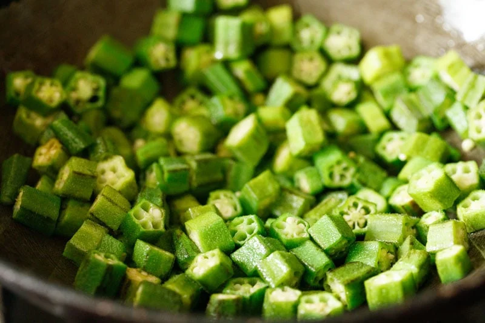
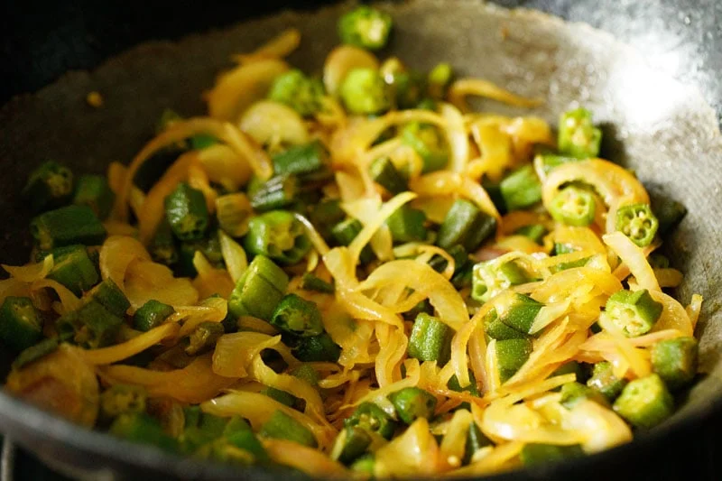
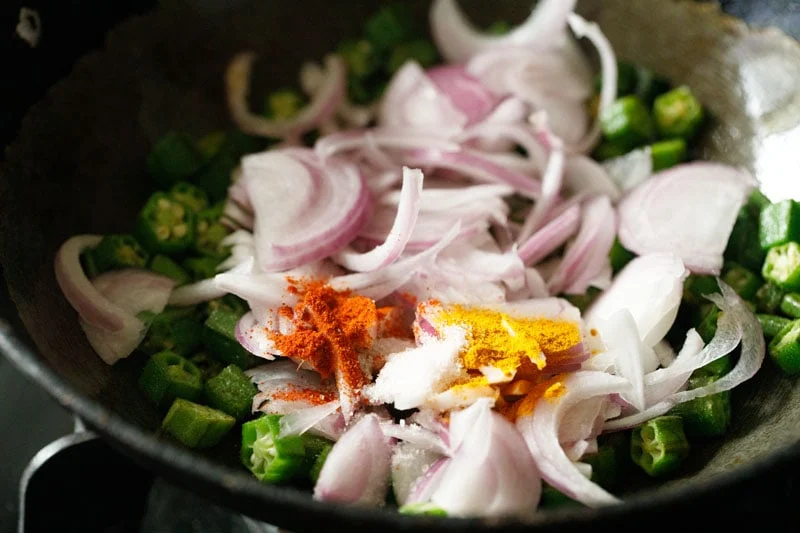
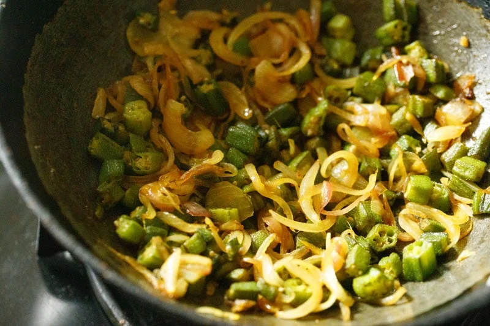

1. Firstly, rinse 500 grams of okra pods in running water. Then wipe them completely dry with a kitchen napkin or just spread them on a large tray or plate and allow to dry naturally. Now chop the okra into ¼ inch slices, like in the picture below. Ensure that there should not be any moisture or water droplets on the okra prior to chopping them. They should be completely dry.

2. Next, peel and thinly slice about 2 large onions. You will be needing 2 heaped cups of thinly sliced onions. In a thick bottomed and heavy pan or wok over low heat, add oil or ghee. Then add the chopped bhindi. Mix them with the oil and begin to sauté them on low to medium-low heat

3. Sauté them on a low to medium heat, stirring often, until the okra becomes slightly tender and partially cooked but not browned. This typically takes about 4 to 5 minutes on a low to medium-low heat. But keep in mind that the cooking time will vary with the thickness and size of the pan, quality of the okra and also the intensity of the flame
4. Next add the sliced onions.
5. Then add seasonings to the pan: ½ teaspoon of turmeric powder 1 teaspoon of red chili powder salt to taste
6. Stir to combine the seasonings with the bhindi and onions.
7. Continue to sauté over low to medium-low heat.

8. First the onions will soften but you have to continue to sauté them stirring after every 2 to 3 minutes.
9. Continue sautéing over low to medium-low heat until the onions become ligthtly caramelized or light golden. By this time the okra also become perfectly tender. Be careful to not overcook the bhindi, otherwise it might get mushy. Stir frequently. Cooking the onions until they lightly caramelize, takes about 15 to 20 minutes on a low to medium-low heat. Again the timing will vary depending upon the thickness of the pan and intensity of the flame.

10. Lastly, add 1 teaspoon of dried mango powder (amchur powder) and 1 teaspoon of garam masala powder. For a more tangy taste, add a bit more of the dry mango powder. Swap dry mango powder with ½ teaspoon lemon juice for some tang and brightness.

11. Mix well.
12. Serve Bhindi Do Pyaza warm as a main or side dish with roti or paratha. It can also be served as a side dish with a North Indian meal. It can also be packed for a lunch box with a side of roti or paratha.